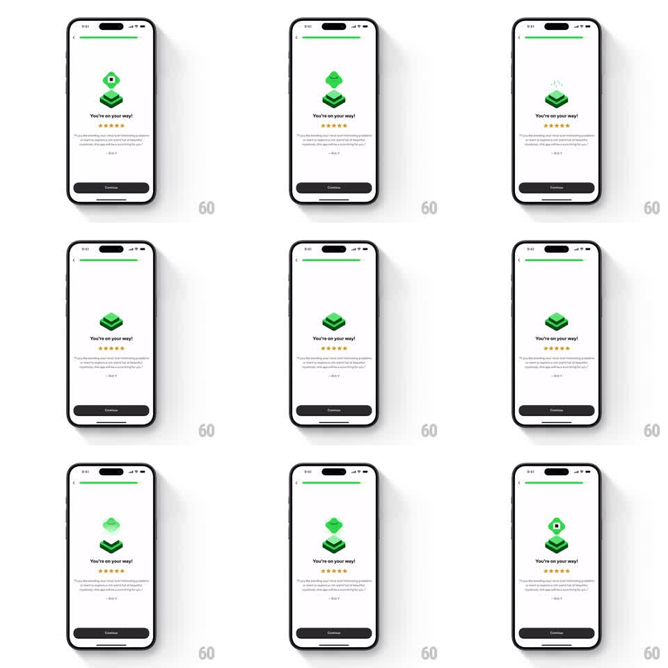

Media
Frame-by-frame

Rebuild this animation 1:1: Brilliant's review screen - Koji, the green cube mascot, bobs and breathes on a floating platform over the five-star testimonial card.

Rebuild this animation 1:1: Brilliant's review screen - Koji, the green cube mascot, bobs and breathes on a floating platform over the five-star testimonial card. ## Integration Integration: stack-agnostic spec - springs given as stiffness/damping, timed motions as duration + curve; map every value to your framework and animation library of choice. ## Scene Onboarding screen with a progress bar at top: the mascot - a small green cube creature with a face, standing on a stack of floating green platform layers - centered above "You're on your way!", five filled stars, a testimonial quote with attribution, and a dark Continue button. ## Motion spec Pattern: idle mascot loop, ~3s cycle. - The whole mascot stack bobs gently (translateY +-6px, 3s, ease-in-out sine). - The cube breathes: subtle squash and stretch (scaleY 1 to 0.96 and back, same 3s cycle, slightly phase-shifted behind the bob so it compresses at the bottom). - The platform layers drift apart and back by a few pixels each (+-2px, staggered phase per layer), keeping the stack loose and alive. - Occasionally the cube does a quick happy hop (translateY -14px and land with a squash, spring stiffness 400 damping 12) every fourth cycle. - Text, stars, and button are static - all motion lives in the mascot. ## Calibration - The bob amplitude is small; this is ambience, not a bounce. - Squash and stretch stays subtle (4% max) - more reads as jelly. ## Reduced motion Mascot static. ## Don't miss - The platform layers move independently, not as one rigid stack. - The hop is a rare accent, not part of every cycle.